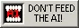
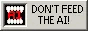
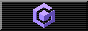
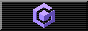

Retro Software Cave
These are a collection of links primarily for older hardware.
or if you just need some extra fancy tools and this page has what you need
for OS's incapable of loading modern web standards you can use frogfind.com, downloads may not work though, if not, try dlmage!
if you have suggestions email me at ***anna@atl.tools*** :).
PLEASE email me if you have a solution for a https to http proxy i can package to these older systems.
If i can limit the amount of programs transferred via slow pcmcia usb adapters, cds and floppies to one, i am happy.
1 kbps internet > a bajillion mbps transfer speed. how dare you expect me to move out of my chair and move a usb.
Onto the links!
- Service Packs
- Greater Compability
- Internet
- Gaming
- General Programs/Unsorted
- Service Packs
- Greater Compatibility
- kernelex - kernel extender for Windows 98 to launch XP programs- Direct download
- oemdrivers.com- Good for finding old drivers such as display/audio drivers
- Realtek AC97 audio drivers compat Win98 to XP -- Direct download
- NUSB driver for windows 98- Direct download
- Internet - i will blog about this eventually
-
mypal-browser- browser for windows XP capable of displaying modern sites very well -Direct download
-
firefox 52.9.0esr- last supported firefox version for windows xp
-
dlmage - Download manager for win9x - Direct Download
- Gaming
- Nestickle - Direct download NES emulator for dos (requires DOS4GW, maybe DOS/32 works?)
TO DO: add direct x and some other necessary frameworks for most games. abandonware sites too

 
 


 
